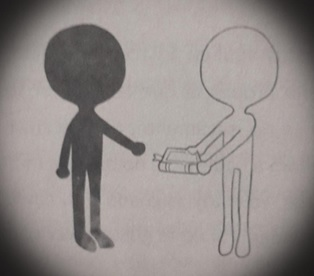

Se presentan algunos términos útiles para el conocimiento del Mundo Espectral y los fantasmas:
↖Alineación: fenómeno en el que un superposición efimera comienza a existir de manera espontánea.
↖Combinación: dos o más fantasmas usan sus poderes al mismo tiempo para producir efectos que no podrían lograr de forma individual.
↖Convocación: fórmula mágica, un fantasma puede recitarlo si se encuentra en el Mundo Físico para solicitar la creación de una superposición.
↖Estatus espectrales: reglanentan aspectos tan diversos de la existencia de los fantasmas como las diversas etapas qye deben seguir tras la muerte, que hacer con los saberes misteriosos que posea, como comportarse en entornos sociales o que lugares pueden habitar.
↖Expansión: una combinación que produce efectos más pontentes, o extraños, de lo que parecia posible para loa fantasmas que la intentan.
↖Fantasmologia: el estudio experimental de los fantasmas
↖Fantasmogonía: el estudio teórico de loa fantasmas, por los seres vivos o los mismos fantasmas.
↖Hueso: forma despectiva que tienen algunos fantasmas para referirse a los seres vivos.
↖Materia Espectral: todo aquello que tiene masa, peso y volumen que ocupa un lugar en el espacio y está sujeto a las leyes incomprendidas de Mundo Espectral.

↖Mundo: dentro de la fabtasmogonía, cualquier dimensión de la existencia.
↖Ruido Interminable: Fenómeno natural que entorpece la comunicación entre el Mundo Físico y el Mundo Espectral, los mensajes de un mundo y otro pueden llegar a diatorcionarse.
↖Saberes misteriosos: todos los conocimientos que un fantasma adquiere por el hecho de serlo, y que un ser vivo no podría descubrir por su propia cuenta.
↖Zahorí: en el Mundo Físico, practicante de la seudociencia de localizar cosas por meduos mágicos; en el Mundo Espectral, aquel fantasma que aprende y utiliza esa destreza, en especial para encontrar a fantasmas y otras criaturas que hayan transgredido una ley.